Carouge, depuis 1878
La pierre, travaillée rue des Moraines.
Marbre, granit et quartz pour la salle de bains, la cuisine, les sols, les escaliers, la cheminée ou le jardin. De la sélection de la dalle à la pose sur place.
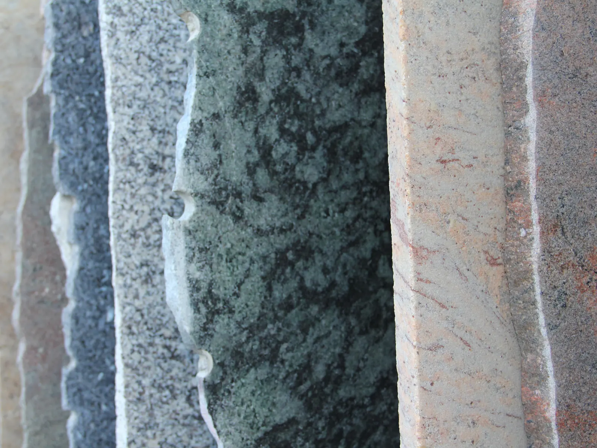
Du bloc à la pose
Une équipe, un savoir-faire, de l’expérience, une passion. Chaque étape se fait à Carouge ou sur votre chantier.
- SélectionMarbres, granits et quartz de qualité.
- Conseils et devisConseils, choix, études de projets, devis.
- Relevés et plansRelevés sur place, plans de fabrication et de pose.
- StockUn vaste stock de marbres et de granits dans notre dépôt.
- AtelierUn atelier, des machines performantes.
- FournitureFourniture à disposition, emballée.
- FinitionFinition des détails, contrôle qualité.
- Pose sur sitePose par nos équipes, suivi des chantiers.
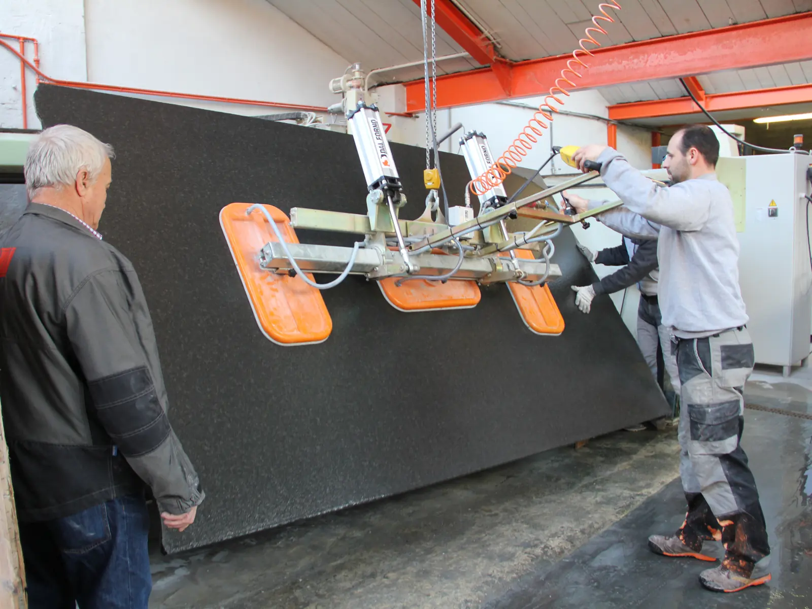
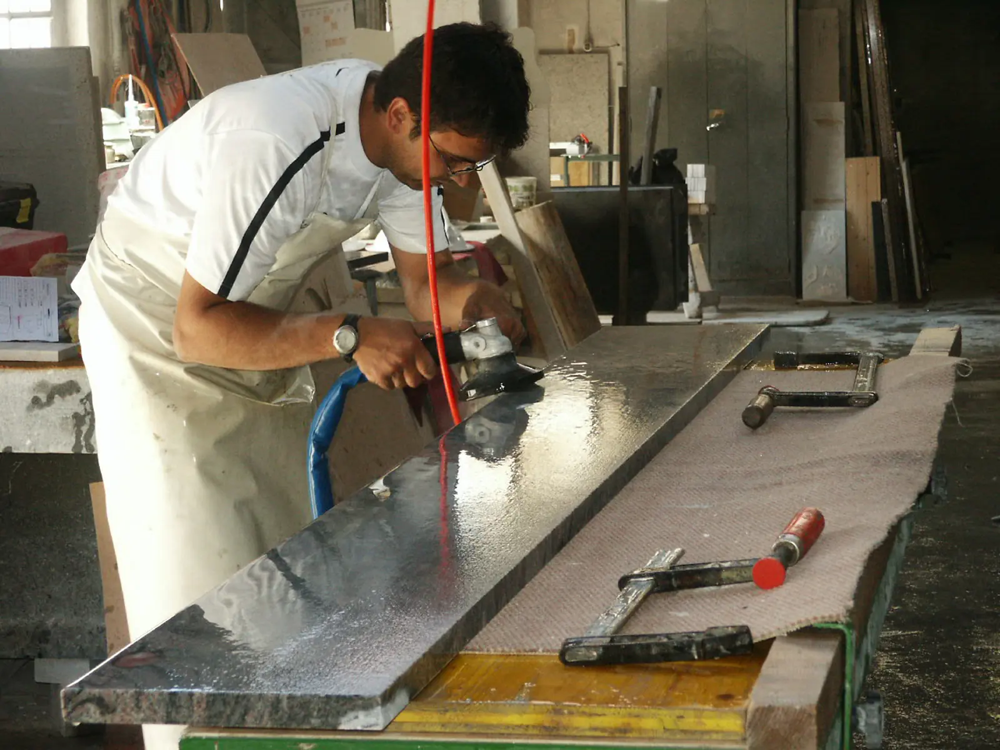
Réalisations
Quelques chantiers, par type d’ouvrage.
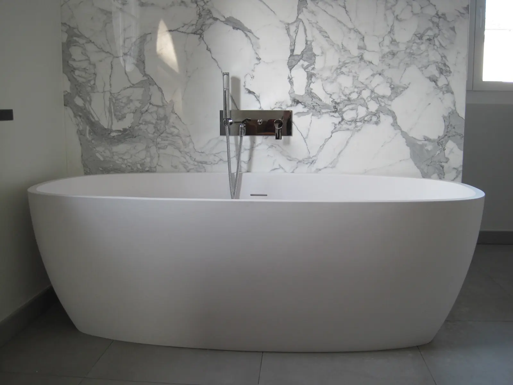
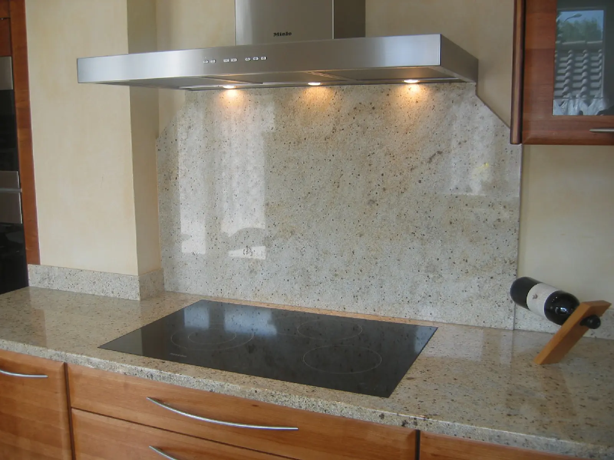
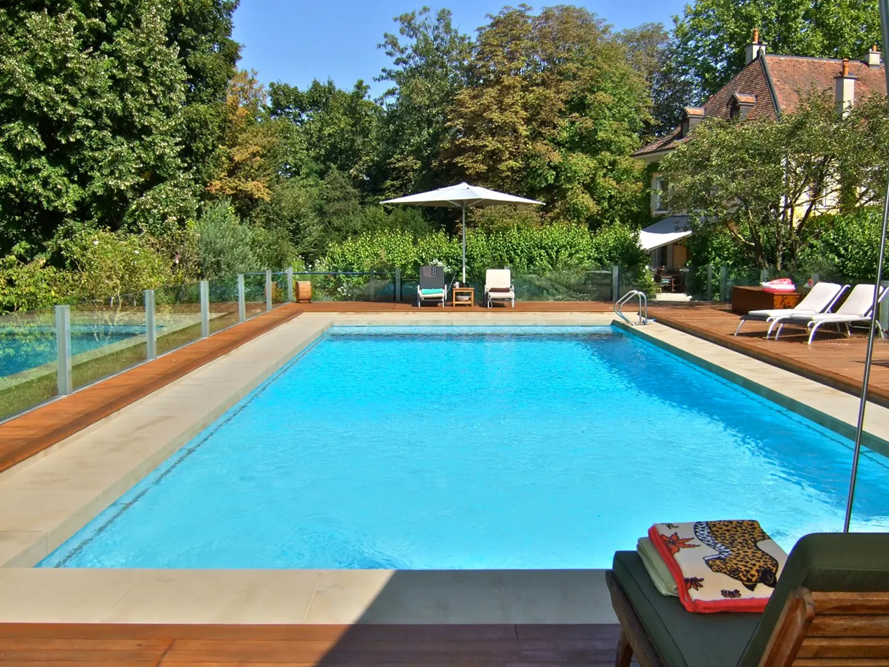
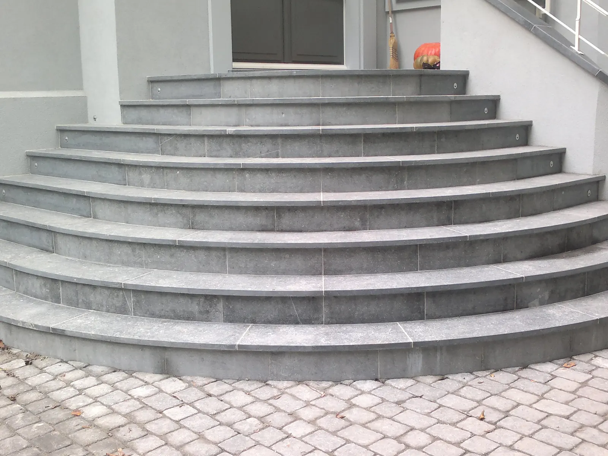
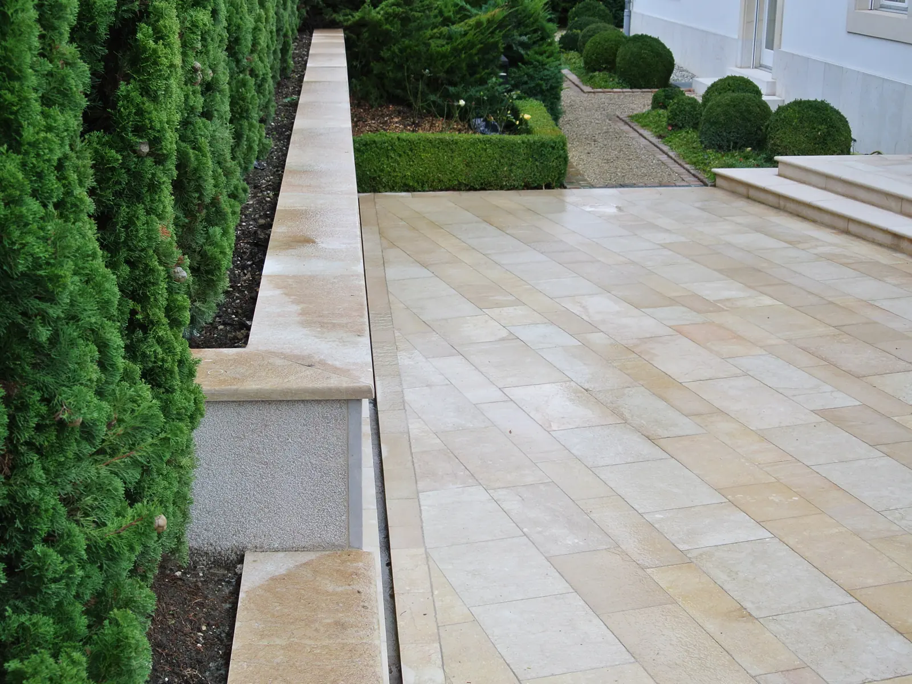
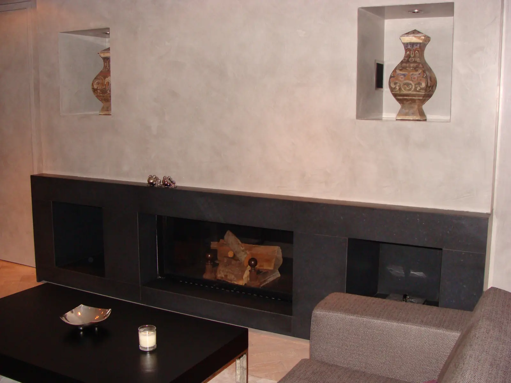
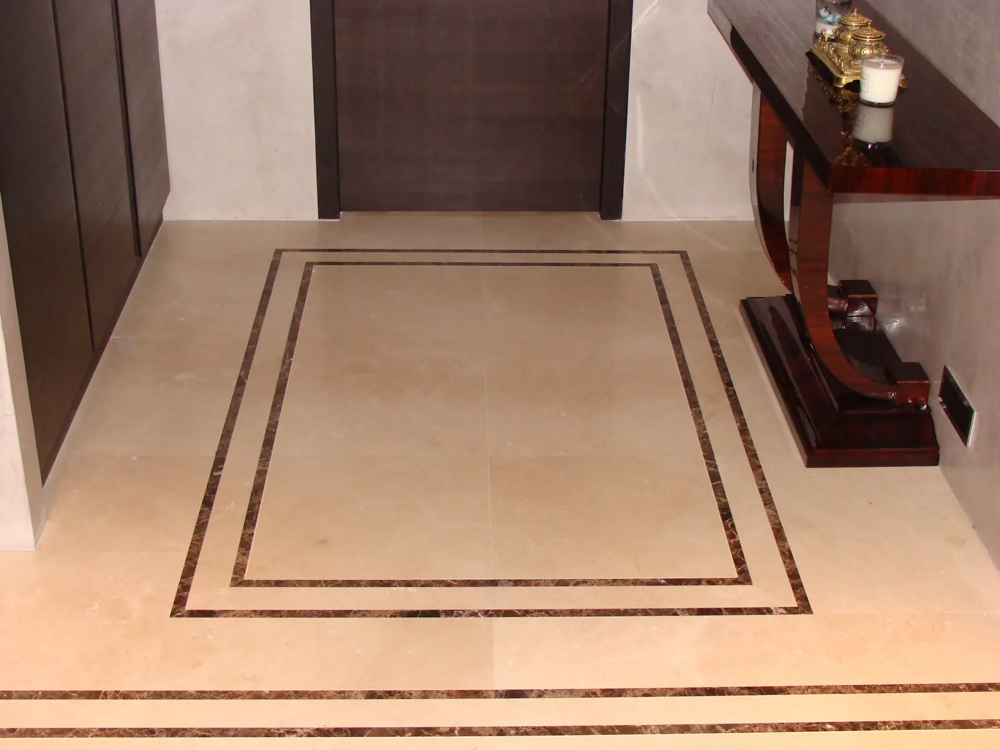
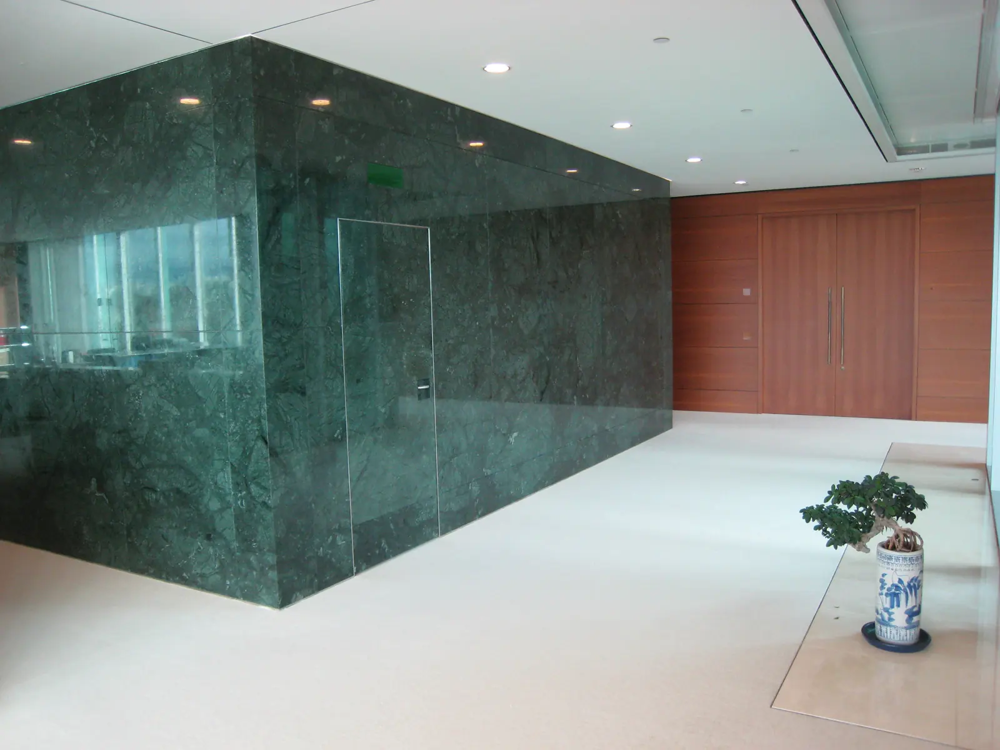
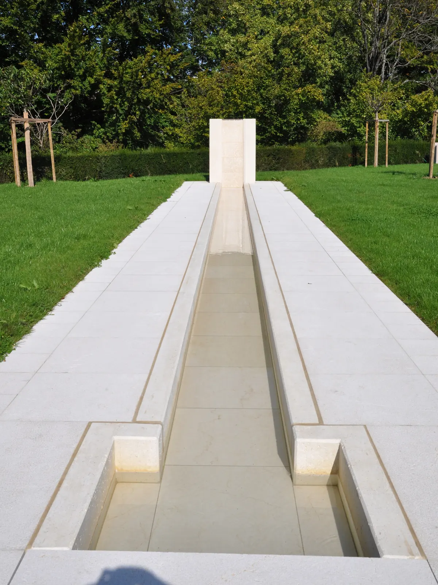
Nous travaillons aussi l’art funéraire.
Une marbrerie à Carouge depuis 1878
En 1951, Louis Rossi, originaire de Poschiavo dans les Grisons, vient à Carouge travailler chez Alfred Minazzi. En 1964, il reprend la marbrerie du 14, rue des Moraines, déjà presque centenaire. Depuis, la marbrerie est sous l’égide de la famille Rossi.
- 1878Bianchi & Jolivet, puis Bianchi, Minazzi & Aulas, Alfred Minazzi
- 1964Rossi & Leuzinger
- 1968Louis Rossi
- 1985L. Rossi & Fils
- 2010Marbrerie Rossi SA
Membre de la FER Genève, du Second Œuvre genevois, de l’Union genevoise des marbriers et de l’Association romande des métiers de la pierre.
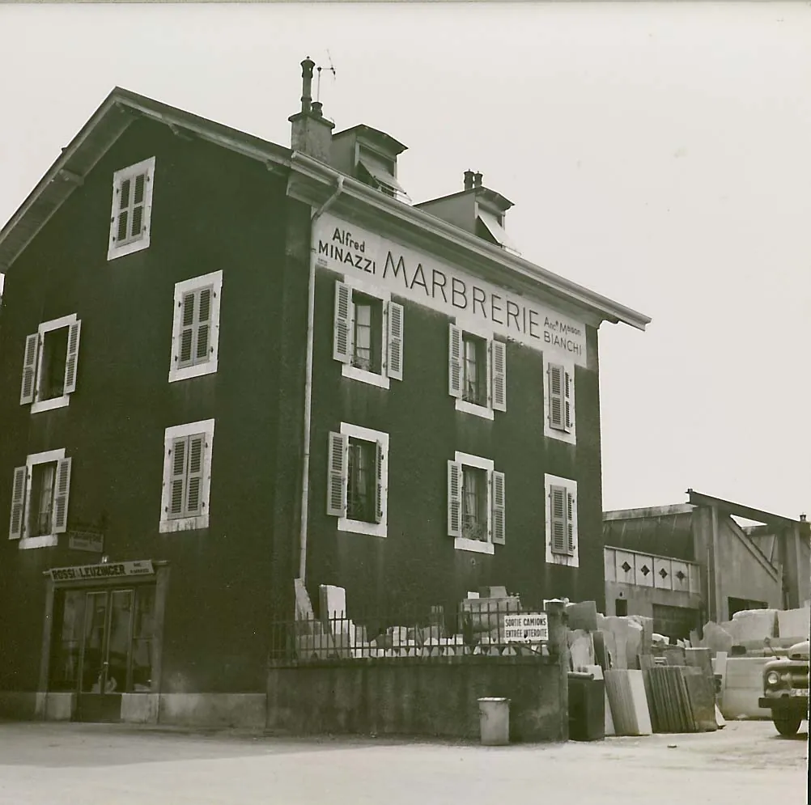
Parlons de votre projet.
Décrivez-nous votre salle de bains, votre cuisine ou votre escalier : nous vous répondons avec un devis.
022 342 03 42 Écrire à la marbrerieRue des Moraines 14
1227 Carouge, Genève
marbrerierossi@bluewin.ch
Fax : 022 342 51 95
Voir sur la carte